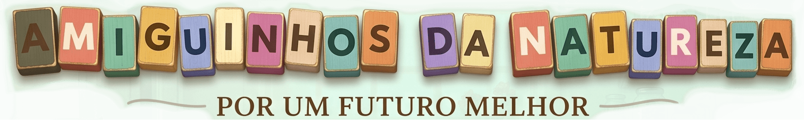
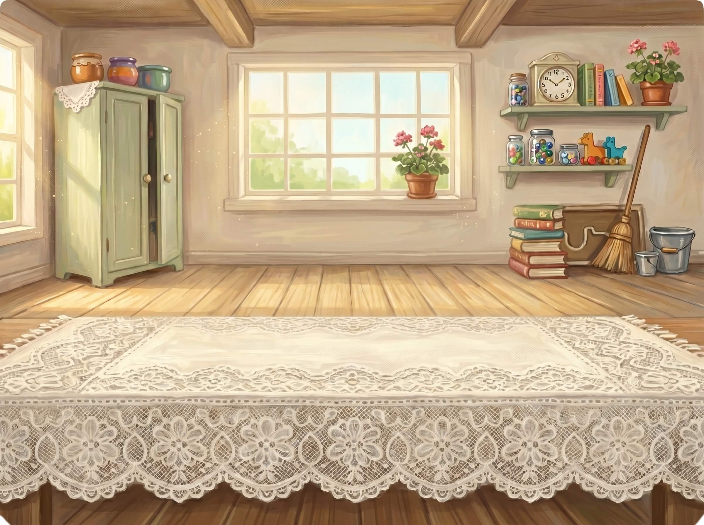
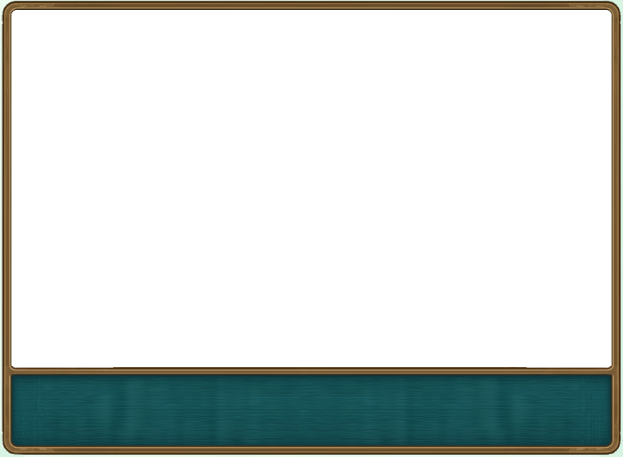
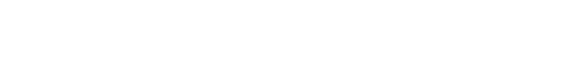
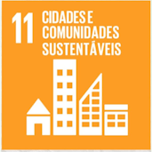
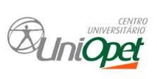

✦ SE PA RE ✦
Amiguinhos da Natureza

♻ UMA AVENTURA DE RECICLAGEM ♻



CIDADES E COMUNIDADES SUSTENTÁVEIS
Cada objeto que você descarta corretamente ajuda a construir um futuro melhor! A reciclagem é um dos caminhos para reduzir a poluição, preservar a natureza e tornar as cidades mais limpas, verdes e justas para todos.
🌱 Pequenas ações diárias transformam grandes cidades.
— Amiguinhos da Natureza ♻

♻ RECICLAR
🌍 PRESERVAR
🏙️ TRANSFORMAR